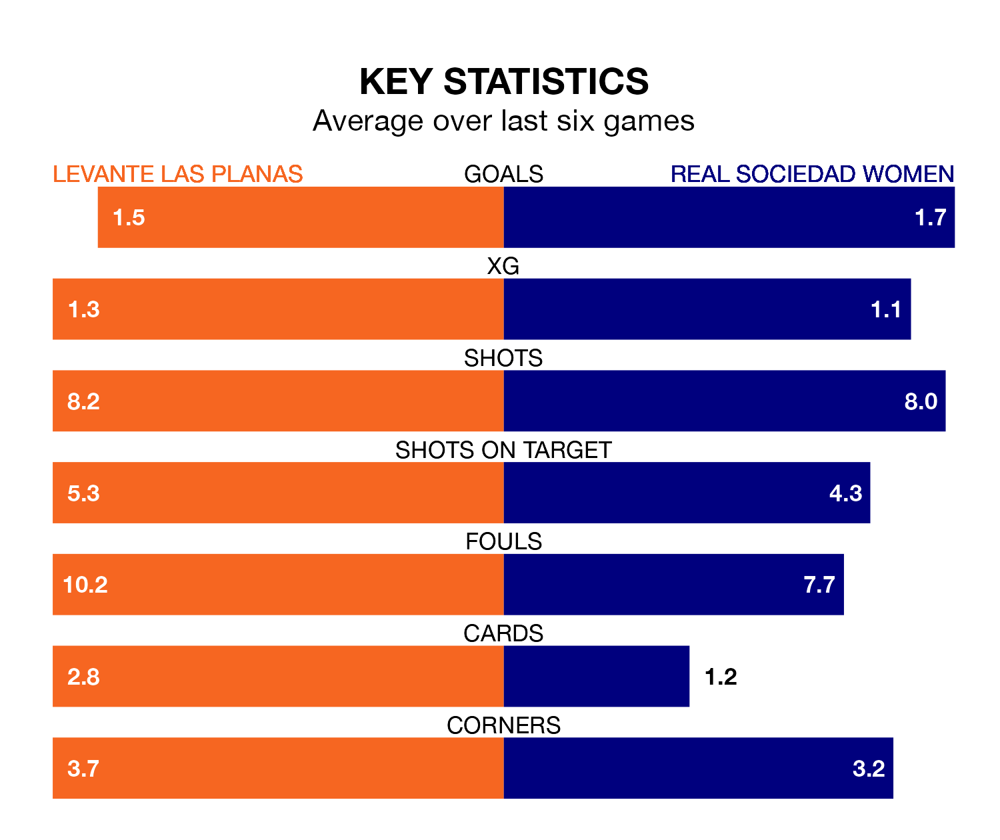

Levante Las Planas face Real Sociedad Women at Camp Municipal Les Planes on Saturday lunchtime looking to secure a first win in six Primera Division Women games.
Levante Las Planas have lost four and drawn one matches since they last earned three points – against UD Granadilla Tenerife on November 12.
They face a Sociedad Women side who have won two and drawn two over that time.
In Synne Jensen, Sociedad Women have one of the league's sharpest shooters so far this season. She has notched eight goals in 13 appearances, to sit third in the scoring charts.
Her goal rate of one every 117 minutes is slightly quicker than that of Anissa Lahmari, Levante Las Planas's top scorer with a goal every 97 minutes, and a total of four goals in 11 games.
With 18 goals in 13 games so far this season, the hosts are scoring at below the league average rate with 1.4 goals per game. And they are conceding more than average, letting in 26 goals at a rate of 2.0 per game.
The away team are also below average scorers, with 1.5 goals per game, compared to a league average of 1.6. They have conceded 1.8 goals per game.
Levante Las Planas are 10th in the table after 13 games, of which they have won four and drawn four, earning 16 points.
Sociedad Women are two places ahead of Levante Las Planas in eighth, with five wins and three draws putting them on 18 points.
Over the last two years, Levante Las Planas and Sociedad Women have played each other twice. They won one each.
Their last meeting was on May 13, when Levante Las Planas won 1-0 at home.
Levante Las Planas's last match was on January 6, a 9-1 loss against Barcelona Women, with Allegra Poljak getting the goal for Levante Las Planas.
Sociedad Women drew 3-3 with UD Granadilla Tenerife last time out, on January 7, with Sanni Franssi (two) and Jensen on the scoresheet.
Updated: 11:31, 09/01/24